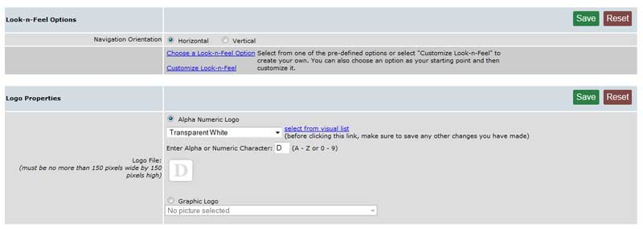

Working with LnF: {{lnfpanel.msg}}
Your web page is divided into six (6) distinct look and feel areas, all of which can be modified to achieve just the look you want for your site. While not a specific area of the page, there is a 7th section to the Look-n-Feel panel that is used to control the display of background images.
You have control over the colors, the fonts, the buttons, and the images. A complete list of all available colors is available by selecting “View Color Samples” on the “Customize the Look-n-Feel” screen. Or, just select one and hover over the color code entry box- a pop up will show you the color you selected.
Don't worry about "playing" with the look and feel of your site, as long as you don't publish, you can use the "Confirm Restore" option - accessible by selecting the "Publish" button on the left side of the main admin panel - to revert the site to the most recent published version.
When you've saved changes to the look-n-feel section, click the 'open preview window' link in the upper right corner of your admin panel screen to check out how they look.
The first screen when you click the look n feel tab gives you some basic options
Navigation Orientation - Menu Items (buttons) can be displayed Horizontally in the Header section of the site or vertically. Make that selection here and then fine tune it in the main lnf section
Customize Look-n-Feel When you select the “Customize Look-n-Feel” option on the initial screen, you will see a screen showing each of the sections that can be modified. Don’t be afraid to experiment - you can always reset all color values to the original defaults by selecting “Reset all Values to Original Default” on the “Customize Look-n-feel” page.
However, For many of us it's hard to decide on an appropriate look, color scheme, and navigation style for the site. If you would like to use a template (colors, fonts, and menu items) to get you started or a scheme developed by another admin, select “Choose a Look-n-Feel Option.” When you are ready to modify the Look-n-Feel, select “Customize Look-n-Feel.” You can also select a template and modify it later - an excellent way to get going quickly.
When you select “Choose a look-n-Feel Option” you will see a screen similar to the abbreviated one shown here.

The Look-n-Feel Template Options are divided into three types:
- 1. Global Options - Professionally developed templates, including a header graphic. For new users, we recommend you select one of these templates as your starting point.
- 2. My Options – Templates that you have developed and saved. These do not include any graphics. It is a good idea to save your template so that you can restore the site to its saved state – especially useful when you change the site to reflect holiday themes.
- 3. Shared Options – Templates developed by other admins. If you would like to share your template with other customers, use the “Save current L-n-F as a template” link at the top of the “Customize Look-n-Feel” page and in “Template Group” select “Shared Options.”
Logo Properties: (on the Look-n-Feel Options panel). If you want to use a logo on the site, you have two options:
- 1) You can select the "Alpha Numeric Logo" option and then decide which type you want - the rotating letter logo ( you select the letter from the drop down menu) or the fixed character logo (you enter the letter or number in the "Enter The Alpha or Numeric Character" entry box.
- 2) If you have a logo that you would like to upload to the pictures folder, this is a convenient way to do it. It not only uploads the graphic, it puts it in place for you. If you don’t have a logo, just leave it blank. To upload your logo, select the "Graphic Logo" option, then the “Browse” button, locate the logo on your local PC, and select “Save.” If you have already uploaded the logo to your picture folder, you can select it in the drop down.
Page properties are the attributes you assign to all page backgrounds on the site (note: this does not affect the page area backgrounds- for that, go to the content area properties section). To create your own look and feel, first select a background color. You can choose from a list of colors or enter a color value in RGB format (#nnnnnn). If you are using vertical menus, we suggest that you leave the margins set at zero or a very small value of 5 or 10 pixels and make sure the background color is not the same color as the header, logo, or menu areas. Select “Save”. If you are using horizontal menus, the margins can be increased to show more page area on the screen. The size is in pixels and 150 pixels is equivalent to about 1 inch on the screen.
It you want to use a logo on the site, you have two options:
- You can select the "Alpha Numeric Logo" option and then decide which type you want - the rotating letter logo (you select the letter from the drop down menu) or the fixed character logo (you enter the letter or number in the "Enter The Alpha or Numeric Character" entry box.
- If you have a logo that you would like to upload to the pictures folder, this is a convenient way to do it. It not only uploads the graphic, but also puts it in place for you. If you don’t have a logo, just leave it blank. To upload your logo, select the "Graphic Logo" option, then the “Browse” button, locate the logo on your local PC, and select “Save.” If you have already uploaded the logo to your picture folder, you can select it in the drop down. Your logo should be 150 pixels by 150 pixels or smaller.
 Header Source: Use this option to choose the header type that your want. The header can be a graphical header (picture or other graphic), or a text header (text below). If you choose a graphical header, you must upload the image to the pictures folder before you can select it. Notice that some of the options below are unavailable when you choose a graphical header.
Header Source: Use this option to choose the header type that your want. The header can be a graphical header (picture or other graphic), or a text header (text below). If you choose a graphical header, you must upload the image to the pictures folder before you can select it. Notice that some of the options below are unavailable when you choose a graphical header.
Horizontal Justification: Use this option to determine the horizontal placement of your text or image on the header.
Vertical Justification: Use this option to determine the vertical placement of your text or image.
Background Color: Use this option to define the color of the header (text) or the background color (graphics). You can choose from a list of colors by using the drop down or enter a specific color by entering its RGB value (format #nnnnnn).
Header Font: Use this option to define the specific font (face) you want. We strongly recommend using a common font (Arial, Verdana, etc.).
Header Font Color: Use this option to determine the color of the font that is used to display text in the header. You can choose from a list of colors by using the drop down or enter a specific color by entering its RGB value (format #nnnnnn).
Header Text: Use this option to enter the text you would like to appear in the header.
Header Image File: Use this drop down to select a previously uploaded picture.
Help Text Status: See the menu properties section to change this option.
Help Text Background Color: If the Help text is enabled, use this option to determine the background color of the text area. The font text color is a default black.
Font: Use this option to define the specific font (face) you want.
Font size: Use this option to define the specific font size you want.
Font Color: Use this option to determine the color of the font that is used to display text in the header. You can choose from a list of colors by using the drop down or enter a specific color by entering its RGB value (format #nnnnnn).
Background Color: Use this option to define the color of the Title bar. You can choose from a list of colors by using the drop down or enter a specific color by entering its RGB value (format #nnnnnn).
The options available on this panel depend on several selections. If you chose Horizontal Menus on the initial screen, you will see a panel similar to the one below. You define the appearance of the menus on this screen, but the text on the buttons is system generated from the list of menu items on your home page. The sub menu items are generated from the menu items linked to the pages defined by the buttons on the home page.
There are advantages and drawbacks to this layout. The advantage is a simpler to maintain, cleaner navigation. Each page on the site will have the same menu- itmes will drop down to display options for pages linked from the homepage. The drawback is that it doesn't allow for a whole lot of flexibility- if you need to create a lot of sub pages, you might find it restrictive.
Horizontal Menu Considerations:
- The menu item text on the horizontal menu is generated automatically from the menu items on the home page. The text for the sub-menus is also generated automatically from the menu items on each of the pages linked to the home page.
- If you are using menu items at the 3rd (or deeper) level, you should convert them to text links using the "Insert Link" button on the editor's tool bar. As an example, if you have "Home Page --> Association --> Documents --> specific documents" as the menu items, you should add text links to the specific documents on the "Documents" page.
- Try to keep the number of menu items on your home page to a minimum. While the menus will automatically wrap to a second line, that is not very cosmetically appealing.
- The Page Properties section of the Look-n-Feel panel can now play an important part in the cosmetics of your site. Try increasing the left and right margins to 100 or 150 pixels.
- With horizontal menus, logos are integrated into the header area
Menu Vertical Position: This option is used to define where the menu should appear - at the top of the header or the bottom.
Menu Horizontal Position: This option is used to define the horizontal justification - on the left, in the center, or on the right.
Font: This option defines the specific font (face) the system will use.
Font Size: This option is used to control the size of the font. Select Small (8pt), Medium (10pt), or Large (12pt).
Menu Row Background Color: This option defines the background color of the "bar" that contains the menu. Usually, it will be set to the color of the Title Bar or the color of the menu background. You can choose from a list of colors by using the drop down or enter a specific color by entering its RGB value (format #nnnnnn).
Menu Background Color: This option is used to define the color of the background for your horizontal buttons. You can choose from a list of colors by using the drop down or enter a specific color by entering its RGB value (format #nnnnnn).
Menu Font Color: This option control the color of the text on the buttons and should provide a contrast to the background color. You can choose from a list of colors by using the drop down or enter a specific color by entering its RGB value (format #nnnnnn).
Sub Menu Background Color: This option is used to define the background color of any sub menu items. It should be different than the main item background color to provide a visual clue that it is a sub. You can choose from a list of colors by using the drop down or enter a specific color by entering its RGB value (format #nnnnnn).
Sub Menu Font Color: This option controls the color of the text on the sub menu items and should provide a contrast from the sub menu background color. You can choose from a list of colors by using the drop down or enter a specific color by entering its RGB value (format #nnnnnn).
Rollover Background Color: This option is used to define the background color that the user will see when they move their mouse over the button. You can choose from a list of colors by using the drop down or enter a specific color by entering its RGB value (format #nnnnnn).
Rollover Font Color: This option is used to define the font color that the user will see when they move their mouse over the button. You can choose from a list of colors by using the drop down or enter a specific color by entering its RGB value (format #nnnnnn).
Include Global Buttons: This option is used to control the display of the global (same everywhere) buttons "back" and "home." Select either, both or none.
Global Button Positioning: This option defines where the global button(s) should appear - at the beginning (front) of the menu or at the end.
Powered By Color: This option allows you to control the font color of the “Powered by Nord Enterprises” link located at the bottom of the screen. If you have enrolled in the enhanced features option package, it can be set to the same color as the menu item background color, effectively making it invisible. If you are using the basic option package, the menu items background color and the “Powered By Color” selection cannot be the same color.
If you chose Vertical Menus on the initial screen, you'll have some options for menu background. You can choose 'Graphical' to choose from our image based backgrounds. Or you can choose one of two Color Tile options. These don't rely on a fixed background image, so are much more flexible with regard to color scheme as well as size of menu item text.
Note: The Menu Preview section will update as you make selections to the different fields. This will let you find a good color scheme. Hover over the preview button to see the hover effect/color change.
Font: This option defines the specific font (face) the system will use.
Font Size: This option is used to control the size of the font. Select Small (8pt), Medium (10pt), or Large (12pt).
Menu Background Color: This option defines the background color of the menu area - the left side of the site. You can choose from a list of colors by using the drop down or enter a specific color by entering its RGB value (format #nnnnnn).
Menu Font Color: This option defines the color of the text on the button and should provide a contrast to the background color. You can choose from a list of colors by using the drop down or enter a specific color by entering its RGB value (format #nnnnnn).
Include Global Buttons: This option is used to control the display of the global (same everywhere) buttons "back" and "home." Select either, both or none.
Global Button Positioning: This option defines where the global buttons should appear - at the beginning (front) of the menu or at the end.
Button Label Position: Allows you to control the alignment of your button text- left, center, or right.
Powered By Color: This option allows you to control the font color of the “Powered by Nord Enterprises” link located at the bottom of the screen. If you have enrolled in the enhanced features option package, it can be set to the same color as the menu item background color, effectively making it invisible. If you are using the basic option package, the menu items background color and the “Powered By Color” selection cannot be the same color.
Help Text Status: This option is used to enable or disable the display of the hover (help) test that a user sees when they hover their mouse over their mouse over the buttons.
Help Text Background Color: This option defines the background color of the hover (help) and is only available if the "enable" option has been selected. You can choose from a list of colors by using the drop down or enter a specific color by entering its RGB value (format #nnnnnn).
Font: Use this option to define the specific font (face) you want.
Font Size: Choose the font size you want for your page areas. Note that if you've changed the font size in an individual page area (using the formatting toolbar), that will override this global font size.
Font Color: Use this option to determine the color of the font that is used to display text on the pages. You can choose from a list of colors by using the drop down or enter a specific color by entering its RGB value (format #nnnnnn).
Background Color: Use this option to define the color of the content area. The font and the background color should provide good contrast. You can choose from a list of colors by using the drop down or enter a specific
Apply Background Image to: Use this option to control whether the image is positioned on the page background or on the pages themselves in the content area.
Background Image: Use this section to select or upload an image.
Repeat Background Image: This option is used to control whether the image should appear once (No) or be repeated as needed to fill the area (Yes).
Background Image Vertical Position: If the repeat option is "no" you can use this option to position the image vertically. This is most effective on a page content image.
Background Image Horizontal Position: If the repeat option is "no" you can use this option to position the image horizontally. This is most effective on a page content image.
Be sure to select "Save" when you have finished making changes.